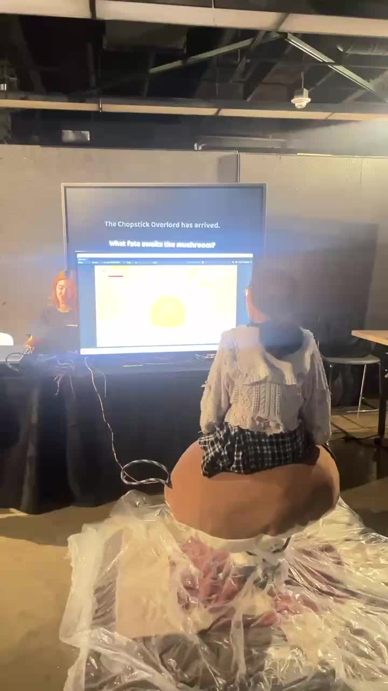

2026-04-03 18:19 · 刹那繁红
video · high
Matched visually: chat screenshot shows same 0:26 arcade-table video; thumbnail is readable.
按截图中的头像、姓名、时间、气泡方向和媒体位置配对。文档持续追加，媒体原件保留。
# Alt2 Team C — visually paired transcript (partial) The entries below are paired from the visible chat layout: date divider, sender avatar/name, bubble alignment, and media thumbnail. `medium`/`low` entries remain explicitly marked for another visual pass. ## 2026-03-31 **20:56 — 软隽辰** - Media: blue image with a large white `2`. - Original: `media_original/2026-03/Img/5b573b6121235ef46cea237d7e087279.dat` - Pairing confidence: high. ## 2026-04-01 **19:15 — 愿有月光相伴** - Media: wide open-book/storyboard image. - Original: `media_original/2026-04/Img/fc00031346fdf0805b28f73477aba757.dat` - Pairing confidence: medium. **After the 19:15 divider — Jason Tan** - Media: hotpot/table image. - Original candidate: `media_original/2026-04/Img/c13efed5e12b69f8a954be885faec5c9.dat` - Pairing confidence: low; exact bubble time requires another frame. ## 2026-04-03 **18:19 — 刹那繁红** - Media: 26-second video showing an arcade/table game scene. - Original video: missing from local storage. - Readable fallback thumbnail: `decoded_media/2026-04-03_1819_刹那繁红_video-thumb.jpg` - Pairing confidence: high. ## 2026-04-21 **00:23 — pingpingdandancaishizhen** - Media: two-panel storyboard image visible in the left-aligned bubble. - Original: `media_original/2026-04/Img/32221cad073390f5602662c2aacc3e18.dat` - Pairing confidence: medium. ## Screen-OCR verified frame — 2026-04-01 - Juliaaaaaa_桐: 这个打光是可以的 - 2026-04-01 20:52 — Jason Tan: @乌冬车 试一下这个 - Jason Tan: 文件《蘑菇开始页面.fbx》, 10.7K, 微信电脑版 - Jason Tan: 图片（引用 Juliaaaaaa_桐：“需要两个表情，一个开心的一个不开心的”）；画面为黑底上的方形角色表情，第一张是不开心表情。 - Jason Tan: 图片（引用同一条 Juliaaaaaa_桐消息）；画面为黑底上的方形角色表情，第二张是开心表情。 这段内容由微信主聊天窗口的连续屏幕画面确认，发送者通过头像、姓名和气泡位置配对。 ## Screen-OCR verified frame — 2026-04-18 - 18:09 — 软隽辰：空格 - 18:07 — DUO：按键盘就行 - 18:07 — DUO：能不能加一个教程跳过功能 - 17:52 — 软隽辰：改了 - 17:52 — 软隽辰：记得之后再 enable 回去 - 17:47 — 软隽辰：还不行的话就 movement 脚本有问题 - 17:47 — 软隽辰：你去锅和桌子1里面把那四个 cube 禁用了试试 - 17:46 — DUO：然后结算页面的字还是全都摞在一起的 ## Screen-OCR verified frame — 2026-04-23 to 2026-05-11 - 2026-04-23 13:19 — Jason Tan：转咯 - 2026-04-23 13:19 — pingpingdandancaishizhen：感谢 - 2026-04-23 13:19 — Jason Tan：👌 - 2026-05-11 11:15 — 刹那繁红：下周我们要决定名单了，谁还要继续项目？ - 2026-05-11 11:15 — 刹那繁红：@Mention All - 2026-05-11 19:32 — 刹那繁红：Justin 这正在问，然后在 summer 他会有 workshop（引用“下周我们要决定名单了，谁还要继续项目？”） - 2026-05-11 19:40 — Jason Tan：我不弄了谢谢哈 - 2026-05-11 19:40 — 愿有月光相伴：我应该也不弄了我去研究生了 - 2026-05-11 19:41 — 刹那繁红：👌 - 2026-05-11 19:42 — 软隽辰：我不来 ## Screen-OCR verified frame — 2026-04-22 - 17:55 — DUO：@愿有月光相伴 订书机放在哪了 - 17:57 — 愿有月光相伴：我放回去了你们还有需要吗 - 17:59 — DUO：ok - 22:28 — DUO：图片（表格截图，包含 poster print、plastic sheet、rope、laser cut 等项目及 Arrived 状态） - 22:28 — DUO：看看有没有漏算的 - 22:28 — DUO：然后发一下 zelle @pingpingdandancaishizhen @愿有月光相伴 - 22:30 — pingpingdandancaishizhen：6266377713 - 23:26 — pingpingdandancaishizhen：没有漏算的（引用 DUO“看看有没有漏算的”） ## Screen-OCR verified frame — 2026-04-21 19:59–20:03 - 19:59 — DUO：看看能打开吗 @Jason Tan @愿有月光相伴 - 19:59 — DUO：文件《screen-capture (44).webm》，教程的录屏 - 20:00 — DUO：蘑菇的 - 20:02 — Juliaaaaaa_桐：这个黄色没有很亮（引用 DUO“感觉黄色暗啊”） - 20:03 — Juliaaaaaa_桐：图片，手机屏幕上的黄色方块/颜色测试画面 - 20:03 — Juliaaaaaa_桐：图片，手机屏幕上的角色/版面测试画面 ## Screen-OCR verified frame — 2026-04-21 17:54–17:57 - 17:54 — Jason Tan：故事肯定不能砍掉的，有几页故事就要有几句对应的文字内容 - 17:55 — Jason Tan：yea（引用软隽辰“句子数量只要不超过你的页数就行”） - 17:56 — 软隽辰：还有筷子最后我砍掉两页 - 17:57 — 软隽辰：9秒播一个3帧动画实在太长了 - Juliaaaaaa_桐：文字脚本： 1. Wake up! Wake up! 2. Caught and dropped into the pot. Don’t worry—we can survive. 3. Three lives. Survive the timer to win. 4. Stay too long, you’ll overcook. Lose control, float up—and get spotted. 5. Watch your heat meter. Don’t let it max. Surface to cool down. ## Screen-OCR verified frame — 2026-04-21 17:14–17:20 - 17:14 — Juliaaaaaa_桐：Stay too long, and you’ll overcook. Lose control, float to the surface—and get spotted. - 17:14 — Juliaaaaaa_桐：Watch your heat meter. Don’t let it max out. Surface often to cool down. Keep the meter from filling up. - 17:14 — Juliaaaaaa_桐：Press the button to push yourself upward. - 17:14 — Juliaaaaaa_桐：Lean forward or back to move. Shift left and right to aim your view. - 17:14 — Juliaaaaaa_桐：蘑菇是调整了4张 - 17:19 — pingpingdandancaishizhen：筷子也有调整的我都放在gdc里了可以先看一下，我这边电脑有点死了，等他好了我也可以发文本😬 - 17:20 — pingpingdandancaishizhen：gdd😬 ## Screen-OCR verified frame — 2026-04-20 20:28–2026-04-21 00:23 - 20:28 — DUO：哪里说的 - 20:28 — 软隽辰：没说有 presentation - 20:30 — Juliaaaaaa_桐：是没有说 - 20:30 — Juliaaaaaa_桐：🤔 - 20:30 — 软隽辰：只说了最后一节课要互相玩其他组的项目 - 20:30 — Juliaaaaaa_桐：哦哦好 - 20:31 — Juliaaaaaa_桐：那太好了 - 2026-04-21 00:23 — pingpingdandancaishizhen：图片，两格 storyboard（左格人物/锅，右格筷子和食物） ## Screen-OCR verified frame — 2026-04-19 - 12:56 — 刹那繁红：idk - 12:56 — 刹那繁红：准备准备吧 - 13:38 — pingpingdandancaishizhen：图片，现场屏幕/展示场景 - 13:38 — pingpingdandancaishizhen：视频，时长 0:03，现场屏幕/展示场景 - 14:17 — 愿有月光相伴：图片（展示/屏幕画面，下一屏继续核对） ## Screen-OCR verified frame — 2026-04-18 17:12–17:24 - 17:12 — 软隽辰：什么情况 - 17:12 — 软隽辰：说清楚一点 - 17:14 — DUO：筷子的 - 17:14 — DUO：到右边过不去 - 17:24 — 软隽辰：好了 - 17:24 — 软隽辰：你再试试 - 17:24 — 软隽辰：push 完记得要跟我讲 - 17:25 — 软隽辰：我这边又有 conflict 了 - 17:25 — DUO：不行 ## Screen-OCR verified frame — 2026-04-16 20:26–20:32 - 20:26 — 愿有月光相伴：我明天早点起吧看能不能后面在山校做完再去上课 - 20:27 — 愿有月光相伴：会很麻烦吗（引用刹那繁红“我明天可以去南校取”） - 20:30 — 刹那繁红：因为我也要做筷子 - 20:30 — 刹那繁红：我要给你们周六准备一下 - 20:30 — 刹那繁红：要不然周六基本上就裸奔了 - 20:32 — 愿有月光相伴：图片/贴纸“oh…” - 20:32 — 愿有月光相伴：哦哦 okok 但是你要是太忙了的话我去弄一下也可以，感觉你的那个重要点 - 系统记录：Juliaaaaaa_桐 撤回了一条消息 ## Screen-OCR verified frame — 2026-04-16 20:06–20:15 - 20:06 — 愿有月光相伴：我明天大概率是切不了因为我和 Jason 有课 - 20:07 — 愿有月光相伴：你们知道 Model Shop 开到几点吗？如果开得比较晚的话我现在可以去找他们 - 20:07 — DUO：南校的还开着 - 20:08 — DUO：开到十点 - 20:08 — 愿有月光相伴：那我现在开过去吧 - 20:08 — DUO：太好了 - 20:15 — 愿有月光相伴：要跟他们说切成啥样的呀 - 20:15 — DUO：应该是留一圈白边？ - 20:15 — DUO：@Jason Tan ## Screen-OCR verified frame — 2026-04-16 16:25–16:26 - 16:25 — Juliaaaaaa_桐：之前不是说蘑菇方一个筷子方一个 - 16:25 — Jason Tan：@愿有月光相伴 可以问问 chloe 她们组打印的尺寸和纸张吗 - 16:25 — 软隽辰：没时间画了可能 - 16:25 — Juliaaaaaa_桐：之前说是区分下，还是说这个就当作主视觉用了 - 系统记录：Jason Tan 撤回了一条消息 - 16:25 — Jason Tan：就放一个大立牌就够了我觉得 - 16:26 — Jason Tan：筷子那边很难做出跟食物一样效果 - 16:26 — Jason Tan：表情什么的加上去好奇怪 - 16:26 — Jason Tan：而且就筷子一个物体 - 16:26 — Jason Tan：确实 ## Screen-OCR verified frame — 2026-04-16 01:56–16:10 - 01:56 — DUO：可以的 - 01:56 — DUO：尽量早一点 - 01:58 — 愿有月光相伴：行我现在还是回家吧这样我明天就可以早点发给你们 - 16:10 — Jason Tan：文件《poster.psb》，144.3M，未下载 - 16:10 — Jason Tan：图片，蘑菇/食物角色海报草图 - 16:10 — Juliaaaaaa_桐：这个是要搞立体的立牌还是平面的 poster - 16:10 — Jason Tan：平面
video · high
Matched visually: chat screenshot shows same 0:26 arcade-table video; thumbnail is readable.
image_set · medium
原始媒体：media_original/2026-04/Img/32221cad073390f5602662c2aacc3e18.dat
original encrypted attachment present; standard decode pending
Matched visually: left-aligned bubble at 4/21 00:23 shows the two-panel storyboard image; the local attachment was written at 00:26.
image · high
原始媒体：media_original/2026-03/Img/5b573b6121235ef46cea237d7e087279.dat
original encrypted attachment present; standard decode pending
Matched visually: soft隽辰 left bubble displays the blue panel with a large white 2; timestamp is visible in the chat.
image · medium
原始媒体：media_original/2026-04/Img/fc00031346fdf0805b28f73477aba757.dat
original encrypted attachment present; standard decode pending
Matched visually: left bubble shows a wide open-book/storyboard image immediately after the 4/1 19:15 divider.
image · low
原始媒体：media_original/2026-04/Img/c13efed5e12b69f8a954be885faec5c9.dat
original encrypted attachment present; standard decode pending
Visible below the 4/1 19:15 image as a hotpot/table image; exact bubble time needs one more scroll frame.
sticker · high
原始媒体：原件路径
UI-visible; original sticker asset not located
Main chat shows DUO left bubble with animated NICE sticker; followed by Jason Tan recalled-message system row.
image · medium
原始媒体：media_original/2026-03/Img/d0795067be91e99451aa25b706acbb31.dat
original encrypted attachment present; standard decode pending
Main chat visually pairs Jason Tan left bubble with hotpot/table image; local attachment timestamp is 20:44.
image_set · medium
原始媒体：media_original/2026-03/Img/2a8f5fbcae370ecb98877b3ff1c1c913.dat
original encrypted attachments present; standard decode pending
Main chat visually pairs the following left bubbles with the open-book/storyboard illustration; exact individual attachment split needs image-level decode.
image · high
原始媒体：media_original/2026-04/Img/f54e0b0b79ad0812ee59376d3c187091.dat
original encrypted attachments present; standard decode pending
Chat History screenshot visibly shows pingpingdandancaishizhen sending the still image at 13:38.
file_video · high
Chat History visibly shows DUO: tutorial screen recording; WeChat file label is screen-capture (44).webm, 2.2M.
image · high
原始媒体：media_original/2026-04/Img/f572bc0fbc39d5d2225497090a888aa7_t.dat
original encrypted attachment present; standard decode pending
Chat History screenshot visibly shows Juliaaaaaa_桐 sending the phone-screen photo at 20:03.
image · high
原始媒体：media_original/2026-04/Img/31957af6d51794d8c1e7713978ec9798.dat
original encrypted attachment present; standard decode pending
Chat History screenshot visibly shows DUO sending the spreadsheet screenshot after the two text messages at 22:28.
video · high

Chat History screenshot visibly shows the adjacent 0:03 video from pingpingdandancaishizhen; both local 0:03-class video candidates are preserved, with readable thumbnails.